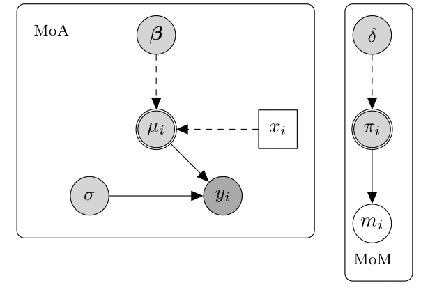
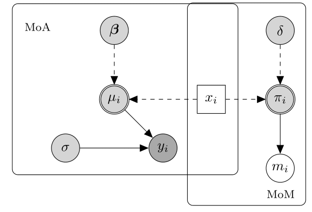
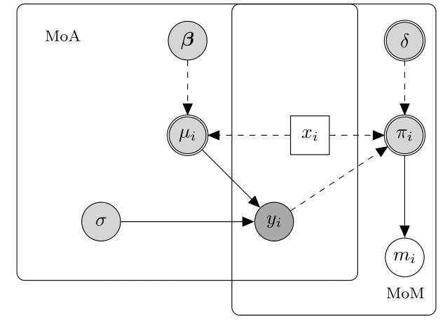

The missing data dilemma
![]()

Hello folks, as per usual I would like to try to update my blog regularly with some new posts and talk about the stuff I like. Today is the day of one of my most beloved topics, yeah we talk about missing data. In future posts I will try to provide some concrete examples in the field of health economics with also some R coding to show some neat cases in which missing data may be a substantial problem when conducting an analysis and why it is important that appropriate methods are used to deal with them. Today instead I would like to provide a gentle introduction to the general problem of addressing missing data i ntour analysis as I feel it is extremely important to introduce the topic in a more theoretical way to justify the way I will deal with them in the future within my code. I will also try to make the content of the post as much related as possible to the field of health economics to make my argument easier to follow for people involved in this field (which is also mine!).
So, let’s start from the basic question, what are missing data and why are they such a big problem?
Very briefly, missing data are defined as data that were intended to be collected but that for some reasons were not. They are a common problem that complicate the statistical analysis of data collected in almost every discipline, including health economics in which almost inevitably some individuals in the sample have their cost and/or effectiveness observations missing at one or more occasions of the follow-up (e.g. missing items or questionnaires due to dropout). When the data collected from a study are incomplete, there are important implications for their analysis.
First, the reduction of the available number of observations causes loss of information and a decrease in the precision of the estimates, which is directly related to the amount of missing data.
Second, missing data can introduce bias, resulting in misleading inferences about the parameters of interest. More specifically, the validity of any method is dependent on untestable assumptions about the reasons why missing values occur being true.
As a result, caution is required in drawing conclusions from the analysis of incomplete data and the reasons behind any missingness must always be carefully considered. Before conducting any analysis with incomplete data, it is important to understand a number of aspects of the missingness to guide the choice of appropriate methods to handle them. This can be achieved by answering three general questions: where (which variables have missing vales); how much (amount and patterns of missingness); why (reasons for the missing data).
Where. A first important distinction is whether missingness affects the outcomes (e.g. costs and effects) or the covariates. In the context of trial-based analyses, outcome data are typically collected at a set of time points, while covariates are often available only at baseline.
How much. A second important aspect to consider before conducting the analysis is to check the amount and pattern of missing data, which are likely to provide some preliminary information about the magnitude of the potential impact of missing data uncertainty on the inferences. Depending on which outcome variable and at which occasions missingness occurred, different missing data patterns may arise (e.g. when a missing observation at time \(j\) implies that all observations measured at subsequent occasions are also missing, then missingnes is refereed to as dropout).
Why. A third, and also the most important, aspect to take into consideration when analysing incomplete data, is to think about possible reasons for the missingness. Why subjects dropped out from the study? Are reasons likely to be different between missingness patterns, treatment groups and type of outcome variables? Do the subjects who dropped out have similar characteristics to individuals who remained in the study (also known as completers)? Any sort of information that helps answering these questions may be key in order to determine the plausibility of the missingness assumptions in the context considered and guide the choice of the methods.
Investigating possible reasons behind missing data becomes a crucial element in the analysis to quantify the uncertainty associated with the missed responses. This can be formally translated into questions about the process responsible of missingness, often referred to as the missing data mechanism, and its implications and links to the data generating process. The missing data mechanism describes the probabilistic process which determines the chance that an observation is missing. Different “classes” or types of mechanisms can be defined according to different assumptions about how the missing data indicator (M) is related to the outcome (Y) and covariates (Xs). Based on Rubin’s taxonomy, three general classes of missingness mechanisms can be identified. Each of these classes is associated with different reasons for missingness and have therefore implications in terms of the appropriateness of different methods of analysis. In the following, I will show some graphical examples to show how different classes of missingness mechanism look like in a general analysis context. To clarify notation: variables and parameters are represented through nodes of different shapes and colours. Parameters are indicated by grey circles with logical parameters defined by double circles, while predictor variables are assumed fixed and drawn as white squares. Fully observed variables are denoted by white circles, partially observed variables by darker grey circles. Nodes are related to each other through dashed and solid arrows which respectively represent logical functions and stochastic dependence. MoA = model of analysis (model of interest to fit), MoM = model of missingness (missing data mechanism).
1 Missing Completely At Random (MCAR), where missingness is independent of both any observed or unobserved data. The below diagram displays an hypothetical example of a MCAR mechanim.

In this case, the probability of missingness is fully independent of any other partially or fully observed variable. Consequently, MoA and MoM are not connected and the missingness probability (\(\pi_i\)) does not depend on any quantity in the MoA. This amounts to assuming that there is no systematic difference between partially and fully observed individuals in terms of the outcome \(y_i\). For example, a MCAR mechanism arises when a sample of patient questionnaires is lost and therefore any missing value is exclusively due to random chance. Two important conclusions can be drawn under MCAR: first, the completers can be thought as a random sample of the target population; second, any method that yields valid inferences in the absence of missingness will also yield valid (but inefficient) inferences using the completers alone.
2 Missing At Random (MAR), where missingness is independent of both any unobserved data after conditioning on the observed data. The below diagram displays an hypothetical example of a MAR mechanism.

In this case, the missingness probability may depend on a fully observed variable. As a result, MoA and MoM are connected by means of the predictor variable affecting both the mechanisms generating \(y_i\) and \(m_i\). Because of this relationship, the partially observed cases are systematically different from the fully observed cases; crucially, however, the difference is fully captured by \(x_i\). An example of a MAR mechanism is when an individual is removed from a study as soon as the value of a specific observed variable (e.g. age or BMI) falls outside a pre-specified range. Missingness is therefore under the control of the investigator and is related to some observed components. The MAR assumption has the following important implications: first, the completers are not a random sample from the target population and any analysis restricted to them will yield biased inferences; second, provided the parameters indexing the missingness process are “distinct” from those of the data process, the missing data mechanism is referred to as ignorable. This implies that the missing values can be validly “predicted” using the observed data and a correct model for the joint distribution of \(Y\).
3 Missing Not At Random (MNAR), here missingness depends on some unobserved data even after conditioning on the observed data. The below diagram displays an hypothetical example of a MNAR mechanism.

In this case, the probability of missingness depends on both the partially and fully observed variables. Thus, \(\pi_i\) depends on both the fully observed predictor \(x_i\) and the partially observed outcome \(y_i\). This means that the difference between fully and partially observed cases still depends on the missing values, even after taking \(x_i\) into account. Therefore, it is necessary to make more structured assumptions about this relationship that go beyond the information contained in the data. A MNAR mechanism is often referred to as non-ignorable missingness because the missing data mechanism cannot be ignored but must be explicitly modelled in order to make inferences about the distribution of the complete data. We note that the term informative missingness is also sometimes used to describe MNAR mechanisms since the model assumed for \(M\) is critical and can drive the results of the analysis.
It is important to clarify that any assumptions made about the missingness process can never be verified from the data at hand, i.e. the observed data provide no information that can either support or reject a specific assumption about the mechanism over another. Because of this, identification is driven by unverifiable assumptions and conducting sensitivity analyses becomes a crucial task. Indeed, the sensitivity of inferences to a set of plausible assumptions concerning the missingness process should always be carefully assessed. For a more comprehensive and adequate review of this topic, please see the book Statistical Analysis with Missing Data by Rubin and Little, which I consider a mandatory reading if you aim to dive into the missing data literature and know something more about it.
I think that is enough for today’s topic as the next one that will need to be addressed is about the available methods that can be used to address the different types of mechanisms’ assumptions. This is a whole new argument which in itself can take a lot of time to discuss depending on how in-depth its presentation is talked. To make sure the content of such an argument goes through I will simply talk about it next time. So, if you are eager to know about what methods are available to deal with what type of mechanisms’ assumptions, say tuned! (spoiler, with missing data most of time there is no unique correct method!). More on this soon.